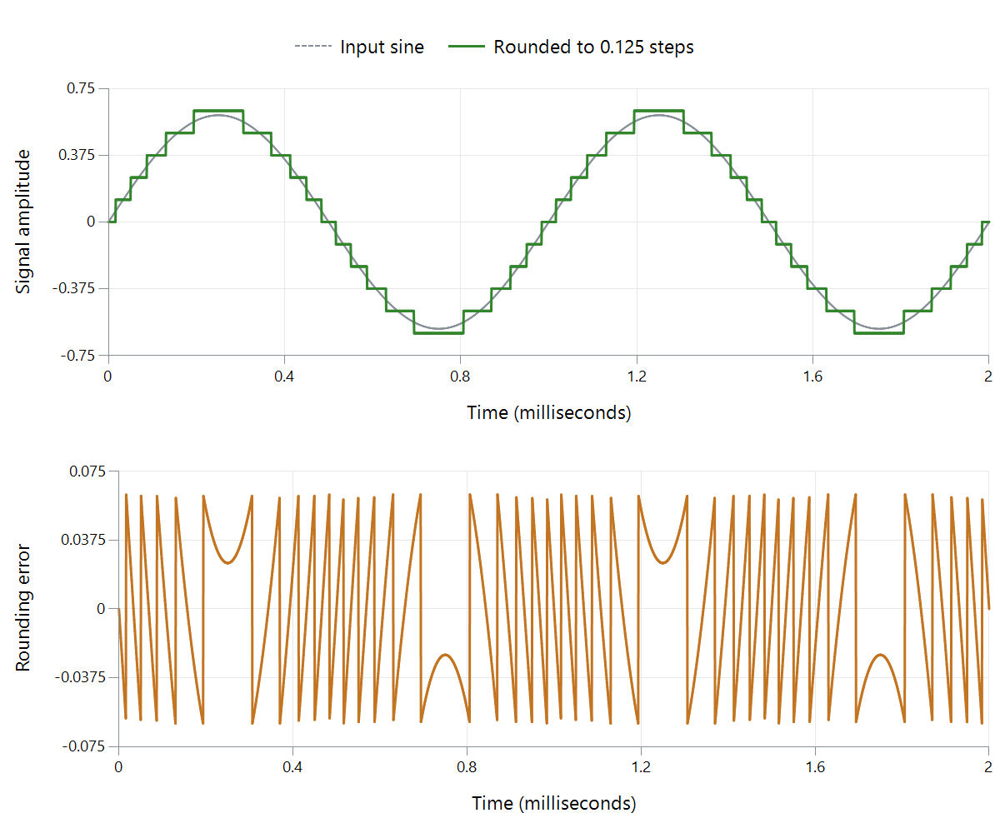

Audio Quantization Noise
Quantization error is the difference between a signal value and the discrete level used to represent it.
Quantization rounds a value onto a set of available levels. The difference between the value you wanted and the level you stored is quantization error.
That error exists even in an ideal numerical conversion with no microphone noise or analog electronics. It becomes especially interesting near the bottom of the available precision, where a small signal may cross very few levels.
Rounding error at a step size of 0.125
Use a deliberately coarse uniform step of 0.125, with no clipping. Rounding to the nearest level produces:
| Input amplitude | Stored amplitude | Error: stored minus input |
|---|---|---|
| 0.10 | 0.125 | +0.025 |
| 0.19 | 0.250 | +0.060 |
| 0.31 | 0.250 | −0.060 |
| 0.49 | 0.500 | +0.010 |
An input can move while the stored level stays fixed. At the next boundary, the stored value jumps. Within the unclipped range, nearest-level rounding keeps the error within half a step: 0.0625 here.

Calculated example: a sine with peak amplitude 0.6 and a quantizer step of 0.125. The exaggerated step makes rounding visible. The lower panel is the actual error, not an unrelated noise recording.
More integer bits provide smaller steps across the same full-scale range. Each additional bit doubles the number of levels, which is why precision can improve without raising the maximum allowed signal.
Why the error may repeat with the sound
The rounding operation is deterministic. A periodic input that visits the same positions relative to the levels can produce a repeating error.
For a sufficiently small signal, the quantized output may spend much of its time on only a few values. Its shape can then differ from the smooth waveform in a systematic way. Heard as audio, that error can contain distortion components related to the original signal, rather than behaving like a steady unrelated hiss.
Calling all of it “quantization noise” can obscure this distinction. The waveform itself tells you why: when the input determines the rounding error, the error is correlated with the input.
What dither changes
Dither introduces a controlled random signal before the final rounding. Appropriate dither changes how the input crosses level boundaries, allowing the quantizer to behave more consistently for very small signals.
It does not make the output numerically identical to the original. It exchanges unwanted signal-dependent behavior for a controlled noise contribution. For a low-level tone or a fade, that can be preferable to periodic distortion or an abrupt disappearance.
This is why the order matters. Dither applied after the value has already been rounded cannot change which level that earlier rounding selected.
Interpreting the familiar SNR estimate
The ideal estimate 6.02 × N + 1.76 dB compares a full-scale sine with a particular model of uncorrelated uniform quantization error. For 16 bits, the result is about 98.08 dB.
Reducing the sine's level reduces its signal-to-error ratio under that fixed noise model. Changing dither, noise shaping, or the assumptions about error changes the analysis too. The formula describes a model, not the whole noise performance of a recording.
In playback and conversion, the useful place to apply this understanding is a precision-reduction step. If decoded audio is adjusted and then stored at a lower integer precision, values need rounding again. The source recording's noise and earlier compression remain separate parts of that signal.
A higher-precision working format provides room for processing between conversions. The final rounding and its treatment determine what happens when the result must fit a lower-precision output.